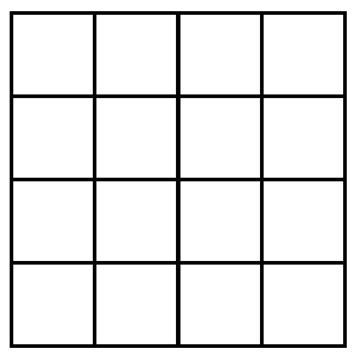
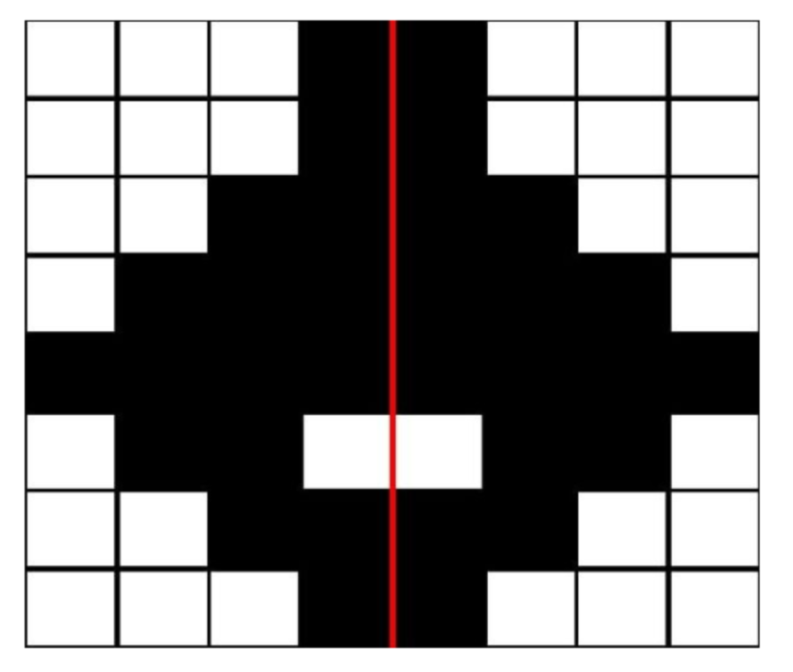

<html>

<head>
  <title>WM symmetry span task</title>

  <!-- Load libraries -->
  <script src="../../lib/jspsych-6.3.1/jspsych.js"></script>
  <script src="../../lib/jquery-3.3.1/jquery.min.js"></script>
  <script src="https://cdn.jsdelivr.net/npm/jstat@latest/dist/jstat.min.js"></script>

  <!-- Load jspsych plugins -->
  <script src="../../lib/jspsych-6.3.1/plugins/jspsych-html-keyboard-response.js"></script>
  <script src="../../lib/jspsych-6.3.1/plugins/jspsych-instructions.js"></script>
  <script src="../../lib/jspsych-6.3.1/plugins/jspsych-preload.js"></script>
  <script src="./js/jspsych-symmetry-judgement-task.js"></script>
  <script src="./js/jspsych-symmetry-judgement-task-display.js"></script>
  <script src="./js/jspsych-symmetry-judgement-task-response.js"></script>
  <script src="./js/jspsych-spatial-span.js"></script>
  <script src="./js/jspsych-spatial-span-recall.js"></script>

  <!-- Load js scripts -->
  <script src="./js/engle_stimuli.js"></script>

  <!-- Load CSS styles -->
  <link href="./css/jspsych_grid.css" rel="stylesheet" type="text/css">

  </link>
</head>

<body></body>
<script>

  //----- CUSTOMIZABLE VARIABLES -----------------------------------------

  minSetSize = 2 // starting length of each trial (i.e., min number of letters in a trial)
  maxSetSize = 5 // ending length of each trial (i.e., max number of letters in a trial)
  repSet = 3 // number of times each set size should be repeated
  randomize = false // present different set sizes in random order. if false, set sizes will be presented in ascending order (as in Engle lab version)
  mode = 'experiment' // 'experiment' or 'debug'. if in debug mode, save the data file locally
  engle_stimuli = true  // whether to use Engle lab symmetry stimuli; if false, use randomly-generated symmetry stimuli
  symmetry_onepage = false  // whether to keep the symmetry judgement task as one page or split into two pages
  fixed_timeout = false  // whether to use fixed timeout time for symmetry judgement task

  //----------------------------------------------------------------------

  var setSizes = []    // different set sizes
  for (var i = minSetSize; i <= maxSetSize; i++) {
    for (var r = 1; r <= repSet; r++) {
      setSizes.push(i)
    }
  }

  var grid = 4;
  var matrix = [];
  for (var i = 0; i < grid; i++) {
    m1 = i;
    for (var h = 0; h < grid; h++) {
      m2 = h;
      matrix.push([m1, m2])
    }
  };

  var nTrials = setSizes.length
  if (randomize) {
    setSizes = jsPsych.randomization.sampleWithoutReplacement(setSizes, nTrials)
  } // shuffle through the set sizes

  var squaregridDemoArray = [2, 2, 3, 3]
  var fullDemoArray = [2, 2, 2]
  var nPracticeTrials = squaregridDemoArray.length //number of practice trials for square memorization
  var nfullDemo = fullDemoArray.length

  var setSizes = squaregridDemoArray.concat(fullDemoArray, setSizes)
  var totalTrials = setSizes.length //total number of trials in the entire task
  var n = 0 //keeps track of number of trials gone by

  var selection = jsPsych.randomization.sampleWithoutReplacement(matrix, setSizes[n])
  var selection_id = -1  //keeps track of recall items within a test stack

  var nSymmetryAcc = 0 //feedback
  var nSquaresRecalled = 0 //feedback

  var nSymmetryTotal = 0 //feedback
  var nSymmetryCorrectTotal = 0 //feedback

  var i_symm_demo = 0  // keeps track symmetry demo trial index
  var i_symm = 0  // keeps track of symmetry trial index

  var symm_demo_rt = []

  if (engle_stimuli) {  // symm_stimuli_demo and symm_stimuli read in from engle_stimul.js

    var symm_shuffled_index_demo = []
    for (var i = 0; i < symm_stimuli_demo.length; i++) {
      symm_shuffled_index_demo.push(i);
    }
    symm_shuffled_index_demo = jsPsych.randomization.shuffle(symm_shuffled_index_demo)

    var symm_shuffled_index = []
    for (var i = 0; i < symm_stimuli.length; i++) {
      symm_shuffled_index.push(i);
    }
    symm_shuffled_index = jsPsych.randomization.shuffle(symm_shuffled_index)

  }
  else {  // null as placeholder
    symm_stimuli_demo = new Array(15).fill(null);
    symm_stimuli = new Array(48).fill(null);
  }

  var instructions = {
    type: 'instructions',
    pages: function () {
      pageOne = '<div style="font-size:20px; text-align:left">In this task you will try to memorize the position of colored squares you see on the screen<br> while you also make judgements about other pictures.<br><br>In the next few minutes, you will have some practice to get you familiar with how the task works.<br>We will begin by practicing the "square" part of the task.<br><br>Click "Next" to begin.<br><br></div>'
      pageTwo = '<div style="font-size:20px; text-align:left">For this practice set, red squares will appear on the screen one at a time. <br> Try to remember where each square was, in the order it was presented in. <br><br> After 2-5 squares have been shown, you will see a grid of the 16 possible places they could have been. <br><br> </img> <br> Your job is to select each square <b>in the order presented.</b><br> To do this, use the mouse to select the appropriate squares.<br><br> The squares you select will turn red.<br><br></div>'
      pageThree = '<div style="font-size:20px; text-align:left">When you have selected all the squares, and they are in the correct order,<br> click the "Confirm" button at the bottom right of the screen.<br><br> If you make a mistake, click the "Backspace" button to remove the last selection.<br><br>If you forget one of the squares, click the "Blank" button to mark the spot for the missing square.<br><br> Remember, it is very important to get the squares <b>in the same order</b> as you saw them.<br><br><br> When you\'re ready, click "Next" to start the square practice.<br><br></div>'
      return [pageOne, pageTwo, pageThree]
    },
    allow_backward: true,
    show_clickable_nav: true
  }

  var instructions2 = {
    type: 'instructions',
    pages: function () {
      pageOne = '<div style="font-size:20px; text-align:left">Now you will practice doing the symmetry part of the task.<br><br> A picture will appear on the screen, and you will have to decide if it is symmetrical.<br><br> A picture is symmetrical if you can fold it in half vertically and the picture on the left<br> lines up with the picture on the right.<br><br></div>'
      pageTwo = '<div style="font-size:20px;"></img> <br><br> Notice that this picture is symmetrical about the red line.<br><br> In the real pictures the red line will not be present.<br><br></div>'
      pageThree = '<div style="font-size:20px;"></img> <br><br> Here, the picture is NOT symmetrical.<br> If you folded this across the red line,<br> the boxes would NOT line up. <br><br></div>'
      pageFour = '<div style="font-size:20px;"></img> <br><br> This is another example of a picture that IS symmetrical.<br> If you folded it vertically, the two sides would line up.<br><br> </div>'
      pageFive = '<div style="font-size:20px;"></img> <br><br> Here is another example of a picture that is NOT symmetrical.<br>Notice that if folded, the two sides would not line up. <br><br> </div>'
      if (symmetry_onepage) {
        pageSix = '<div style="font-size:20px; text-align:left">If the picture you saw was symmetrical, click the "YES" button.<br><br> If it was not symmetrical, click the "NO" button.<br><br> After you click on one of the buttons, the computer will tell you if you made the right choice.<br><br> </div>'
      } else {
        pageSix = '<div style="font-size:20px; text-align:left">Once you have decided if the picture is symmetrical, click on the picture to proceed.<br><br> On the next screen, a "YES" and "NO" button will appear.<br><br> If the picture you saw was symmetrical, click the "YES" button.<br><br> If it was not symmetrical, click the "NO" button.<br><br> After you click on one of the buttons, the computer will tell you if you made the right choice.<br><br> </div>'
      }
      pageSeven = '<div style="font-size:20px; text-align:left">It is very important that you get the pictures correct.<br><br> When you are ready, click "Next" to try some practice problems. <br><br> </div>'
      return [pageOne, pageTwo, pageThree, pageFour, pageFive, pageSix, pageSeven]
    },
    allow_backward: true,
    show_clickable_nav: true
  }

  var instructions3 = {
    type: 'instructions',
    pages: function () {
      pageOne = '<div style="font-size:20px; text-align:left">Now you will practice doing both parts of the task at the same time.<br><br> In the next practice section, you will first be given one of the symmetry problems.<br><br>There is now a <b>time limit</b> on the symmetry problems.<br>If you take too long to respond, the computer will skip the problem and count it as an error.<br><br>Thus, it is important to solve the problem as quickly and accurately as possible.<br><br></div>'
      pageTwo = '<div style="font-size:20px; text-align:left">Once you make your decision about the symmtry picture, a square will appear on the screen.<br><br> Try and remember the position of the square.<br><br>After the square goes away, another symmetry picture will appear, and then another square.<br><br> At the end of each set of pictures and squares, a recall screen will appear.<br> Use the mouse to select the appropriate squares in the correct order.<br><br></div>'
      pageThree = '<div style="font-size:20px; text-align:left">After the square recall screen, you will be given feedback about your performance in this set <br>regarding both the recalled squares and the symmetry problems.<br><br>During the feedback, you will see a number in red on the top right of the screen.<br>This indicates your percent correct for the symmetry pictures for the entire task.<br>It is important to keep this at least at 85%, for us to be able to use your data.<br><br>Therefore, you must perform <b>at least at 85% on the symmetry problems</b>,<br>while doing your best to <b>recall as many squares as possible</b>.<br><br></div>'
      pageFour = '<div style="font-size:20px; text-align:left">Remember to work both <b>quickly</b> and <b>accurately</b>.<br><br>Please <b>do not</b> take any notes during the task.<br><br>Click "Next" to try some practice problems.<br><br></div>'
      return [pageOne, pageTwo, pageThree, pageFour]
    },
    allow_backward: true,
    show_clickable_nav: true
  }

  var instructions4 = {
    type: 'instructions',
    pages: function () {
      pageOne = '<div style="font-size:20px; text-align:left">This is the end of the practice.<br><br>The real trials will just look like the practice trials you just completed.<br><br>Some sets will have more problems than others.<br><br>It is important that you do your best on both the symmetry and the square parts of the task.<br><br>Please do not take notes during the task.<br><br>Click "Next" to begin the task.<br><br></div>'
      return [pageOne]
    },
    allow_backward: true,
    show_clickable_nav: true
  }


  var cog_load_demo_onepage = {
    type: 'symmetry-judgement-task',
    size: 8,
    trial_duration: null,
    number_darkened: [17, 18, 19],
    stimulus: "Is this symmetrical?",
    stimulus_name: function () { return "pracsymm" + symm_shuffled_index_demo[i_symm_demo].toString() },
    stimulus_symmetry: function () { return symm_answer_demo[symm_shuffled_index_demo[i_symm_demo]] },
    black_boxes: function () { return symm_stimuli_demo[symm_shuffled_index_demo[i_symm_demo]] },
    on_finish: function () {
      i_symm_demo += 1
      var rt = jsPsych.data.get().last(1).values()[0].rt;
      symm_demo_rt.push(rt);
    }
  }

  var cog_load_onepage = {
    type: 'symmetry-judgement-task',
    size: 8,
    trial_duration: function () {
      if (fixed_timeout) {
        return 5000;
      } else {
        var mean_rt = jStat.mean(symm_demo_rt);
        var sd_rt = jStat.stdev(symm_demo_rt);
        return jStat.min([500 + mean_rt + 2.5 * sd_rt, 5000]);
      }
    },
    number_darkened: [17, 18, 19],
    stimulus: "Is this symmetrical?",
    stimulus_name: function () { return "symm" + symm_shuffled_index[i_symm].toString() },
    stimulus_symmetry: function () { return symm_answer[symm_shuffled_index[i_symm]] },
    black_boxes: function () { return symm_stimuli[symm_shuffled_index[i_symm]] },
    on_finish: function () {
      var acc = jsPsych.data.get().last(1).values()[0].accuracy;
      if (acc == 1) {
        nSymmetryAcc += 1
        nSymmetryCorrectTotal += 1
      }
      nSymmetryTotal += 1
      i_symm += 1
    },
  }

  var cog_load_demo_display = {
    type: 'symmetry-judgement-task-display',
    size: 8,
    trial_duration: null,
    number_darkened: [17, 18, 19],
    stimulus_name: function () { return "pracsymm" + symm_shuffled_index_demo[i_symm_demo].toString() },
    stimulus_symmetry: function () { return symm_answer_demo[symm_shuffled_index_demo[i_symm_demo]] },
    black_boxes: function () { return symm_stimuli_demo[symm_shuffled_index_demo[i_symm_demo]] },
    on_finish: function () {
      i_symm_demo += 1
      var rt = jsPsych.data.get().last(1).values()[0].rt;
      symm_demo_rt.push(rt);
    }
  }

  var cog_load_demo_response = {
    type: 'symmetry-judgement-task-response',
    size: 8,
    trial_duration: null,
    number_darkened: [17, 18, 19],
    stimulus: "Is this symmetrical?",
  }

  var cog_load_display = {
    type: 'symmetry-judgement-task-display',
    size: 8,
    trial_duration: function () {
      if (fixed_timeout) {
        return 5000;
      } else {
        var mean_rt = jStat.mean(symm_demo_rt);
        var sd_rt = jStat.stdev(symm_demo_rt);
        return jStat.min([500 + mean_rt + 2.5 * sd_rt, 5000]);
      }
    },
    number_darkened: [17, 18, 19],
    stimulus_name: function () { return "symm" + symm_shuffled_index[i_symm].toString() },
    stimulus_symmetry: function () { return symm_answer[symm_shuffled_index[i_symm]] },
    black_boxes: function () { return symm_stimuli[symm_shuffled_index[i_symm]] },
    on_finish: function () {
      i_symm += 1
    }
  }

  var cog_load_response = {
    type: 'symmetry-judgement-task-response',
    size: 8,
    trial_duration: 5000,
    number_darkened: [17, 18, 19],
    stimulus: "Is this symmetrical?",
    on_start: function(trial) {
      var display_rt = jsPsych.data.get().last(1).values()[0].rt;
      if (!display_rt) {  // if display timed out, skip this trial
        trial.trial_duration = 0;
        trial.stimulus = '';
        trial.choices = [];
      }
    },
    on_finish: function () {
      var stimulus = jsPsych.data.get().last(2).values()[0].stimulus_symmetry;
      var choice = jsPsych.data.get().last(1).values()[0].choice_symmetry;
      if (stimulus == choice) {
        nSymmetryAcc += 1
        nSymmetryCorrectTotal += 1
      }
      nSymmetryTotal += 1
    }
  }

  var test_stimuli = {
    type: 'spatial-span',
    grid_size: function () {
      return grid
    },
    trial_duration: 1000,
    selected_box: function () {
      selection_id += 1
      return selection[selection_id]
    }
  }

  var end_test_stimuli = {
    type: 'spatial-span',
    grid_size: function () {
      return grid
    },
    trial_duration: 0,
    selected_box: function () {
      return selection[selection_id]
    },
    display_red_box: false,
    on_finish: function () {
      if (selection_id + 1 >= selection.length) {
        jsPsych.endCurrentTimeline()
      }
    }
  }

  // // The following adds a very brief blank screen between grid presentation
  // var end_test_stimuli = {
  //     type: 'html-keyboard-response',
  //     stimulus: '',
  //     trial_duration: 100,
  //     choices: jsPsych.NO_KEYS,
  //     on_finish: function(){
  //      if (selection_id+1>=selection.length){
  //          jsPsych.endCurrentTimeline()
  //        }
  //      }
  //   }

  var recall = {
    type: 'spatial-span-recall',
    grid_size: function () {
      return grid
    },
    correct_order: function () {
      return selection
    },
    data: function () {
      return { set_size: setSizes[n] }
    },
    on_finish: function () {
      nSquares = setSizes[n]
      nSquaresRecalled = jsPsych.data.get().last(1).values()[0].Ncorrect;
      n += 1
      selection = jsPsych.randomization.sampleWithoutReplacement(matrix, setSizes[n])
      selection_id = -1
    }
  }

  var feedback = {
    type: 'instructions',
    pages: function () {
      pageOne = ""
      if (n > nPracticeTrials) {
        pageOne += "<div style='position: absolute; top: 50px; right: 50px; width: 100px; text-align:right; font-size:20px;'><font color='red'>" + (nSymmetryCorrectTotal / nSymmetryTotal * 100).toFixed(0) + "%</font></div>"
      }
      pageOne += "<div style='font-size:20px;'><b>You recalled <font color='blue'>" + nSquaresRecalled + " out of " + nSquares + "</font> squares in their correct order.</b><br><br>"
      if (n > nPracticeTrials) {
        pageOne += "You made <font color='blue'>" + nSymmetryAcc + " out of " + nSquares + "</font> accurate symmetry judgement(s).<br><br></div>"
      }
      return [pageOne]
    },
    allow_backward: false,
    button_label_next: "Next Trial",
    show_clickable_nav: true,
    on_finish: function () {
      nSymmetryAcc = 0
      if (n == nPracticeTrials + nfullDemo) {
        nSymmetryCorrectTotal = 0
        nSymmetryTotal = 0
      }
    }
  }

  var feedbackSymm = {
    type: 'html-keyboard-response',
    stimulus: function () {
      if (symmetry_onepage) {
        var accuracy = jsPsych.data.get().last(1).values()[0].accuracy
      }
      else {
        var stimulus = jsPsych.data.get().last(2).values()[0].stimulus_symmetry
        var choice = jsPsych.data.get().last(1).values()[0].choice_symmetry
        console.log(stimulus)
        console.log(choice)
        var accuracy = stimulus == choice
      }
      var text = ""
      if (accuracy == 1) {
        text += '<div style="font-size:35px; color:rgb(0 220 0)"><b>Correct</div>'
      } else {
        text += '<div style="font-size:35px; color:rgb(240 0 0)"><b>Incorrect</div>'
      }
      return text
    },
    choices: jsPsych.NO_KEYS,
    trial_duration: 1000
  }

  var IDsub = Date.now()
  var dataLog = {
    type: 'html-keyboard-response',
    stimulus: " ",
    trial_duration: 100,
    on_finish: function (data) {
      // save data locally
      var data = jsPsych.data.get().filter([{ trial_type: 'spatial-span-recall' }, { trial_type: 'symmetry-judgement-task' }, { trial_type: 'symmetry-judgement-task-display' }, { trial_type: 'symmetry-judgement-task-response' }]);
      file_name = "WM_symmetry_span_" + IDsub.toString() + ".csv"
      data.localSave('csv', file_name)
    }
  }

  if (symmetry_onepage) {
    cog_load = cog_load_onepage
    cog_load_demo = cog_load_demo_onepage
  }
  else {
    var cog_load = {
      timeline: [cog_load_display, cog_load_response],
    }
    var cog_load_demo = {
      timeline: [cog_load_demo_display, cog_load_demo_response],
    }
  }

  var test_stack = {
    timeline: [cog_load, test_stimuli, end_test_stimuli],
    repetitions: 10
  }

  var test_procedure = {
    timeline: [test_stack, recall, feedback],
    repetitions: nTrials
  }

  var squaresDemoStack = {
    timeline: [test_stimuli, end_test_stimuli],
    repetitions: 10
  }

  var squaresDemo = {
    timeline: [squaresDemoStack, recall, feedback],
    repetitions: nPracticeTrials
  }

  var symmetryDemo = {
    timeline: [cog_load_demo, feedbackSymm],
    repetitions: 15
  }

  var fullDemo = {
    timeline: [test_stack, recall, feedback],
    repetitions: nfullDemo
  }

  var preload = {
    type: 'preload',
    images: [
      "./img/symmetrySpanExampleGridEmpty.png",
      "./img/instructions1.png",
      "./img/instructions2.png",
      "./img/instructions3.png",
      "./img/instructions4.png",
      "./img/blackbox.png",
      "./img/whitebox.png",
      "./img/whitegrid.png",
    ],
  }

  timeline = [preload, instructions, squaresDemo, instructions2, symmetryDemo, instructions3, fullDemo, instructions4, test_procedure]
  if (mode == 'debug') {
    timeline.push(dataLog)
  }

  // Initialize timeline.
  jsPsych.init({
    timeline: timeline,
  })

</script>

</html>
